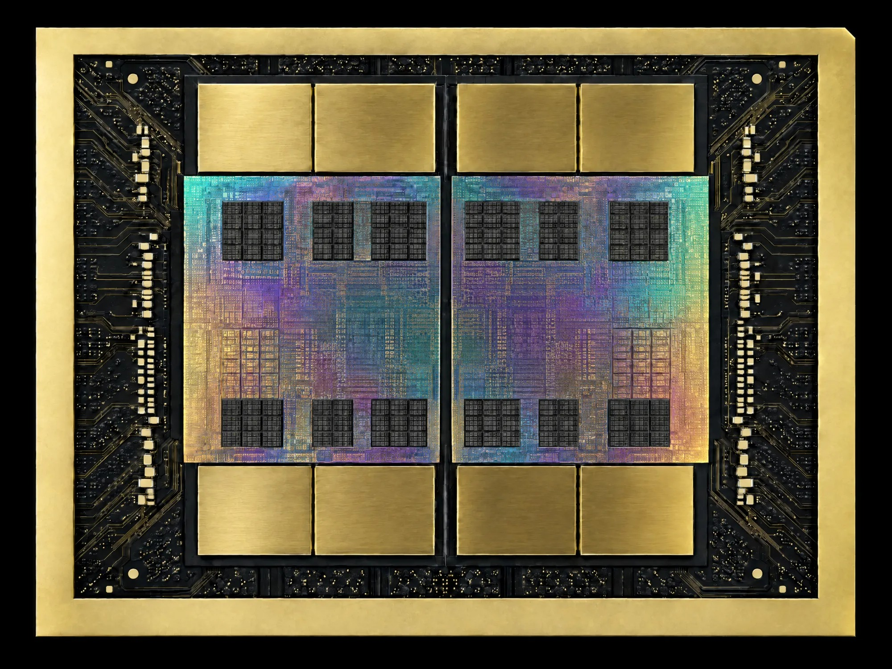

We’re putting buybacks
in the hands of an AI.
- AIs call stocks before earnings.
- Part of $EZ fees fill a pot.
- Top AI calls NVIDIA. We bet the pot.
- Right: buyback. Wrong: pot can go to $0.
Standings
Up next
Every call, receipts included
Graded at the first market close after earnings. The AIs get TradingView's closing price, so they can't make shit up. Neither can we.
Getting smarter or just lucky?
Up or down: how often are they right?
Right way. But how close?
$100K on each AI, now worth
If you’d bet $100K on every call. Shown as $100K plus what those bets made.
One AI, one job: buy back $EZ

When the timer hits zero, we place a bet on NVIDIA's earnings at leverage on Hyperliquid. The call comes from the AI on top of the leaderboard at that moment.
Every $EZ trade pays a fee. Here's where it goes.
The pot
Whichever AI is #1 on the leaderboard takes the pot and apes it into NVIDIA's earnings at leverage on Hyperliquid.
Winning trade
The profits buy back $EZ.
Losing trade
The pot gets rekt.
Next roundWhatever is left rides the next call.
Operations
Keeps the lights on, then pays for what's next:
How big could the bag get? Estimated
Pick a market cap
Pick leverage
If the AI is right, it buys back
of $EZ
If it's wrong, the pot can be wiped out.
The pot can be wiped out. Fully. That's the game.
Get $EZ
Check the address
Watch the next print
Calls the day before, the grade after the market answers.
Best case, an AI buys back $EZ with its winnings. Worst case, the most entertaining way to lose money. Size accordingly. $EZ is a memecoin. Nothing here is financial advice or a promise of value, return or payout.